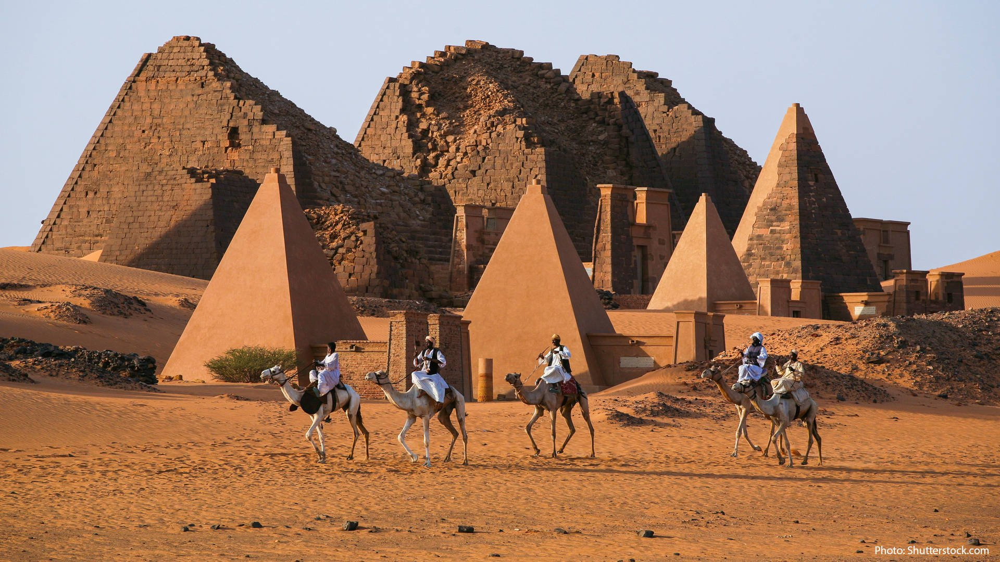
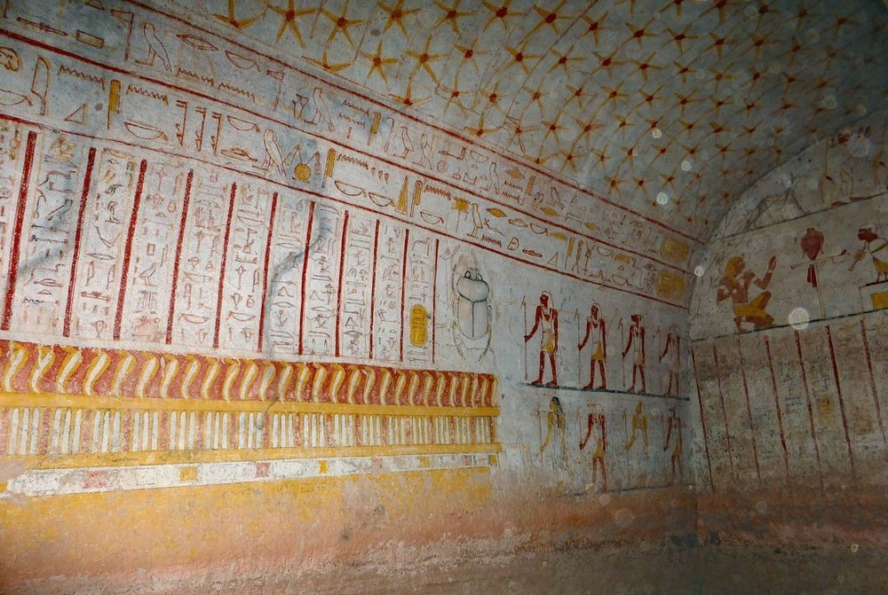
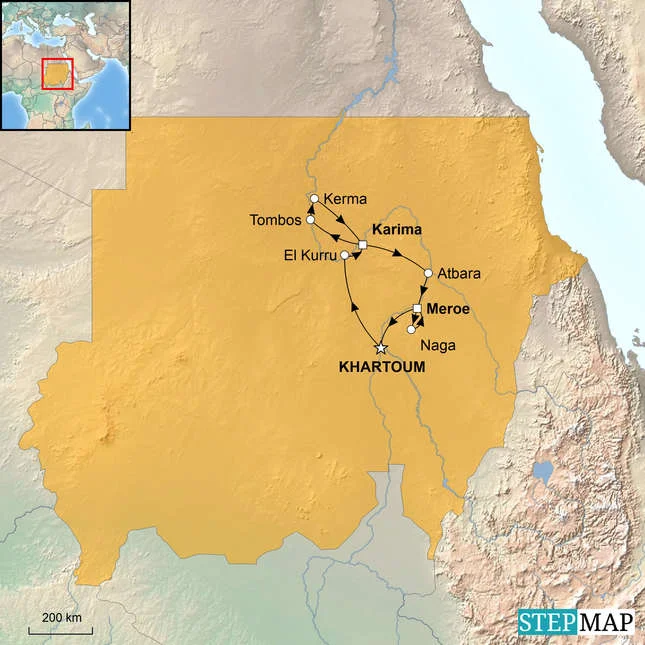

built by the ancient Kushite kingdoms as tombs for royalty and elites, reflecting a unique Nubian adaptation of Egyptian architectural traditions.

The pyramids of Sudan, often called Nubian pyramids, were constructed by the rulers of the Kingdom of Kush, which thrived along the Nile in present-day northern Sudan. Nubia hosted three major Kushite kingdoms: Kerma (2600–1520 BC), Napata (1000–300 BC), and Meroë (300 BC–300 AD). The pyramids primarily date from the Napatan and Meroitic periods, beginning around the 7th century BC and continuing until about 350 AD, serving as burial sites for kings, queens, and wealthy citizens of these kingdoms.
During the Napatan period, Kushite rulers even controlled Egypt as its 25th Dynasty (744–656 BC), which influenced the design of their pyramids. The tradition of pyramid-building in Nubia is believed to have started with King Piankhy and continued by his successors, including Taharqa, Shabataka, and Tantamani.
The pyramids symbolized royal authority, religious beliefs, and societal hierarchy. They were part of elaborate burial customs, often accompanied by temples and ritual objects. The Kushites adapted Egyptian funerary practices but infused them with Nubian religious and cultural elements, creating a distinct architectural and spiritual legacy.
Sudan’s pyramids are more numerous than Egypt’s, with over 200 structures, and represent a distinctive Nubian civilization that thrived along the Nile. They are a testament to the Kingdom of Kush’s political power, cultural sophistication, and architectural innovation, offering a fascinating glimpse into Africa’s ancient history